HP-SDI12-NANO heat-pulse sensor · background chapter · September 2026
An introductory chapter on the electronics and the heat-transfer model behind the digital twin, written for a first-year electrical-engineering student and for anyone coming from agronomy or soil science.
AI disclosure. This chapter was drafted with the help of Claude (Anthropic), an AI assistant. Working from the authors’ instructions, the sensor design files and the digital twin, it wrote the text, drew the figures and ran the calculations. The authors directed the work, reviewed and edited the content, and are responsible for it.
The sensor has a small circuit board (the "head") and three thin needles that go into the soil. The center needle is a heater: seventeen tiny 3.3 Ω resistors in a row. The two side needles carry thermometers (thermistors TH1 and TH3), 8 mm away from the heater. A third thermistor, TH2, sits at the tip of the heater needle, and TH4 sits on the board to report the board's own temperature.
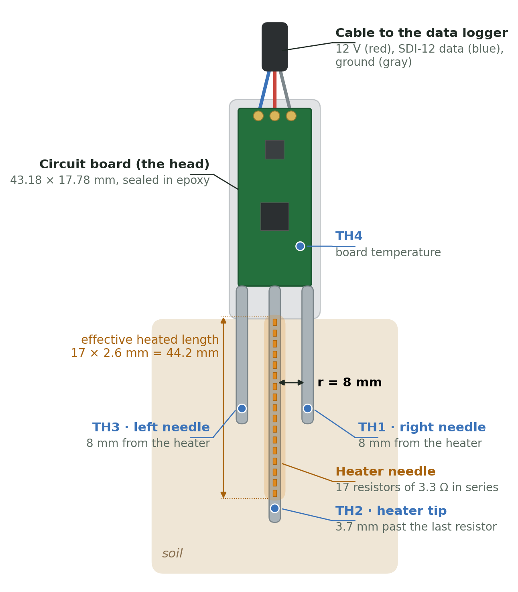
A data logger asks for each measurement over a single data wire, using SDI-12, a standard way for environmental sensors to talk to loggers. One measurement goes like this (Figure 1 shows where each part sits):
Two pieces of engineering make this work: an electronic circuit that measures temperature to a few thousandths of a degree (Sections 2 and 3), and a physical model that converts the temperature curve into soil properties (Sections 4 to 6).
Three quantities describe almost everything on this board:
| Quantity | Symbol · unit | What it is | Water analogy |
|---|---|---|---|
| Voltage | \(V\) · volt (V) | The "push" that drives charge, always measured between two points | Water pressure (height difference between two tanks) |
| Current | \(I\) · ampere (A) | How much charge flows per second | Flow rate (liters per second) |
| Resistance | \(R\) · ohm (Ω) | How strongly a part opposes the flow | A narrow section of pipe |
| Power | \(P\) · watt (W) | Energy converted per second (in a resistor: to heat) | Pressure × flow: the work the water does |
Figure 2 pictures these quantities with water. Handy prefixes: 1 mA = 0.001 A, 1 µA = 0.000001 A, 1 kΩ = 1000 Ω, 1 mW = 0.001 W. Ground (GND) is simply the point we call 0 V; every other voltage on the board is measured from it, just as elevations are measured from sea level.
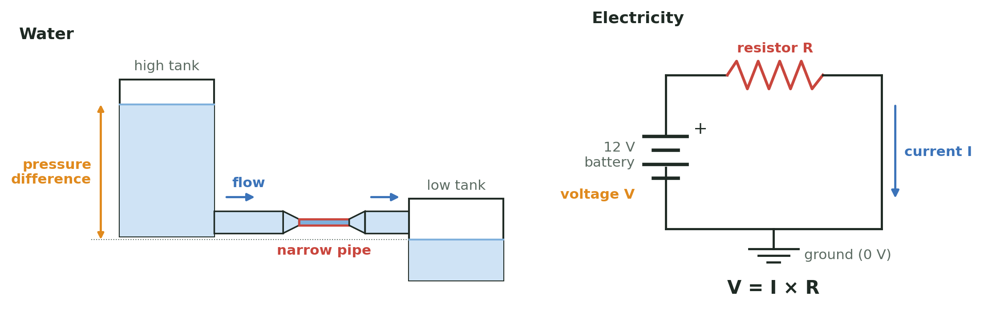
For a resistor, current is proportional to voltage:
$$ V = I\,R \qquad\Longleftrightarrow\qquad I = \frac{V}{R} \qquad\Longleftrightarrow\qquad R = \frac{V}{I}$$and the power it turns into heat is
$$ P = V\,I = I^2 R = \frac{V^2}{R}. $$Worked example: the heater. Seventeen 3.3 Ω resistors in a row (in series, one after the other) add up: \(R_\text{heater} = 17 \times 3.3 = 56.1\ \Omega\). If the full 12 V battery sat across the heater, the current would be \(12/56.1 = 0.214\) A. In reality a few other things are in the same loop, and each takes its share:
| Part of the loop | Resistance or drop |
|---|---|
| Input diode D1 (protects against a reversed battery) | ≈ 0.35 V drop |
| 5 m of 22 AWG cable, out and back (10 m of wire) | ≈ 0.53 Ω |
| Current-sense resistor R5 (the INA226 measures the current here) | 0.10 Ω |
| Heater switch Q1 (a MOSFET, when on) | ≈ 0.03 Ω |
| Board copper in the heater loop | ≈ 0.20 Ω |
| Heater, 17 × 3.3 Ω | 56.10 Ω |
So the heater gets \(P = I^2R = 0.2045^2 \times 56.1 = 2.35\) W while it is on, and each little resistor gets \(0.2045^2 \times 3.3 = 0.138\) W, well under its 0.33 W rating.
Put two resistors in series between a voltage \(V_\text{top}\) and ground. The same current flows through both, \(I = V_\text{top}/(R_1+R_2)\), so the voltage at the point between them is
$$ V_\text{mid} = I\,R_2 = V_\text{top}\,\frac{R_2}{R_1 + R_2}. $$This is the voltage divider, and it is the heart of the temperature measurement: if \(R_2\) changes with temperature, so does \(V_\text{mid}\). If \(R_1 = R_2\), the midpoint sits at exactly half of \(V_\text{top}\).
A capacitor stores electric charge, like a small bucket. Its size, the capacitance \(C\), is measured in farads (F); ours are 100 nF (0.0000001 F) and 1 µF. The charge it holds is \(Q = C\,V\): a bigger bucket, or a fuller one, holds more.
A capacitor does two useful jobs: it smooths (it absorbs sudden spikes and fills in brief dips, like a water tower on a town's water line), and together with a resistor it sets a delay. If you fill a capacitor through a resistor \(R\) from a voltage \(V_0\), it charges along
$$ V(t) = V_0\left(1 - e^{-t/\tau}\right), \qquad \tau = R\,C. $$The time constant \(\tau\) is the whole story: after one \(\tau\) the capacitor is 63% full, after 5\(\tau\) it is 99.3% full, and after 10\(\tau\) it is within 0.005% of its final value. Example: 1.5 kΩ and 1 µF give \(\tau = 1500 \times 0.000001 = 1.5\) ms.
A thermistor is a resistor made to change its resistance with temperature. Ours are "NTC" (negative temperature coefficient): warmer means lower resistance. At 25 °C it is nominally 10 kΩ (±1%). The standard "beta" equation describes it:
$$ R(T) = R_{25}\,\exp\!\left[\beta\left(\frac{1}{T} - \frac{1}{298.15\ \text{K}}\right)\right], \qquad R_{25} = 10\ \text{k}\Omega,\ \beta = 3380\ \text{K}, $$with \(T\) in kelvin (°C + 273.15). Near room temperature the resistance changes by about \(\beta/T^2 \approx 3.8\%\) per degree, which is large; that is why thermistors are good at sensing small temperature changes (Figure 4, left).
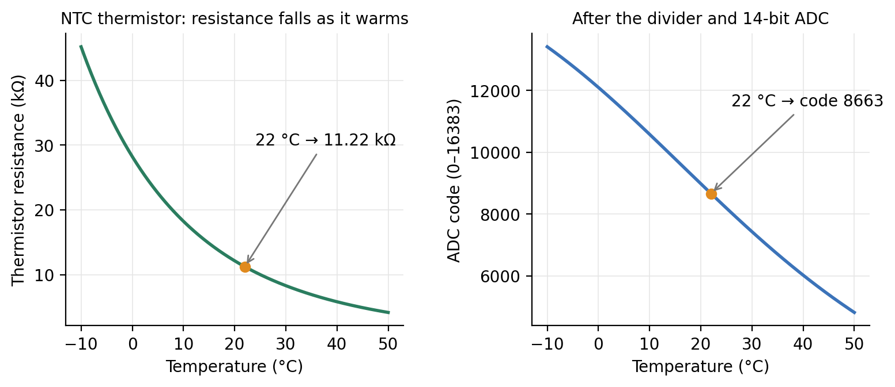
The processor cannot measure resistance. It can only measure voltage. The reference resistor turns a resistance into a voltage by forming a divider with the thermistor (Section 2.3; Figure 3):
$$ V_\text{node} = V_\text{REF}\,\frac{R_\text{NTC}}{R_\text{ref} + R_\text{NTC}}. $$Example at 22 °C: \(R_\text{NTC} = 11.22\) kΩ, \(R_\text{ref} = 10\) kΩ, \(V_\text{REF} = 3.53\) V, so the current is \(3.53/21.22\ \text{k}\Omega = 166\ \mu\text{A}\) and \(V_\text{node} = 3.53 \times 11.22/21.22 = 1.87\) V. Warm the soil and the thermistor's resistance drops, so the node voltage drops.
Why 10 kΩ? Choosing the reference equal to the thermistor's nominal value puts the node near half of VREF, where the divider is most sensitive to small changes. Why 0.1% precision and 25 ppm/°C? Any error in the reference resistor looks exactly like a temperature error. A 1% resistor would shift the reading by about 1%/3.8% ≈ 0.26 °C; the 0.1% part keeps that below 0.03 °C, and its low temperature coefficient keeps it from drifting as the board warms or cools. For the soil properties, what matters is the temperature rise, and a fixed offset cancels when the background is subtracted: a 1% reference error changes the rise by only about 0.2%. The thermistor's \(\beta\) value is different: an error in \(\beta\) scales every rise, and therefore \(\lambda\) and \(C\), one for one.
Does the divider linearize the thermistor? Only as a side effect. The right panel of Figure 4 is not an approximation of the left one: it is the exact result, code = 16384 × R / (R + 10 kΩ). The fraction R / (R + Rref) flattens toward 1 when the thermistor resistance is large and toward 0 when it is small, which counteracts the thermistor’s steep exponential curve. The result is an S-shaped curve that is nearly straight around the temperature where the thermistor equals the reference resistor (25 °C here) and bends more toward cold and hot temperatures. The processor never uses a straight-line approximation: it inverts the exact divider and beta equations (Section 3.3), which costs only a few lines of arithmetic. What the divider’s shape buys is nearly even resolution across the range of soil temperatures:
| Temperature | Thermistor | ADC code | Codes per °C | °C per code |
|---|---|---|---|---|
| -10 °C | 45.2 kΩ | 13414 | 119 | 0.0084 °C |
| 0 °C | 28.2 kΩ | 12098 | 143 | 0.0070 °C |
| 10 °C | 18.2 kΩ | 10581 | 158 | 0.0063 °C |
| 22 °C | 11.2 kΩ | 8663 | 158 | 0.0063 °C |
| 25 °C | 10.0 kΩ | 8192 | 156 | 0.0064 °C |
| 40 °C | 5.8 kΩ | 6021 | 131 | 0.0076 °C |
| 50 °C | 4.2 kΩ | 4813 | 110 | 0.0091 °C |
| 60 °C | 3.0 kΩ | 3819 | 89 | 0.0112 °C |
Near-surface soil can reach 50–60 °C in summer, especially while the heater is on. Even at 60 °C one code is about 0.011 °C, about 45 times finer than the half-degree signal. A smaller reference resistor would move the flattest part of the curve to warmer temperatures: with 6.8 kΩ, the value matching the thermistor at about 35 °C, resolution at 60 °C improves by about 20% but is about 13% worse at 10 °C, and the dividers draw more current, which lowers VREF and adds a little self-heating. Because noise, not the number of ADC steps, will limit the measurement, 10 kΩ remains a sound choice for the whole 0–60 °C range.
The processor's analog-to-digital converter (ADC) compares the input voltage with a reference voltage and reports a whole number, the code. With 14 bits there are \(2^{14} = 16384\) steps:
$$ \text{code} = 16384 \times \frac{V_\text{node}}{V_\text{AREF}}. $$Here is the trick in this design: the ADC's reference (AREF) is connected to the same VREF that feeds the dividers. Substitute the divider equation and VREF cancels:
$$ \text{code} = 16384 \times \frac{R_\text{NTC}}{R_\text{ref}+R_\text{NTC}} \qquad\Rightarrow\qquad R_\text{NTC} = R_\text{ref}\,\frac{\text{code}}{16384 - \text{code}}. $$Worked example. At 22 °C: code = 16384 × 11.22/21.22 = 8663. Going back: \(R = 10\ \text{k}\Omega \times 8663/(16384-8663) = 11.22\) kΩ, and inverting the beta equation,
$$ T = \left[\frac{\ln(R/R_{25})}{\beta} + \frac{1}{298.15}\right]^{-1} - 273.15 = \left[\frac{\ln 1.122}{3380} + \frac{1}{298.15}\right]^{-1} - 273.15 = 22.0\ ^\circ\text{C}. $$How fine is the measurement? Near 22 °C the code changes by about 158 codes per °C, so one code is about 0.006 °C. The planned firmware averages 64 readings per sample (the twin assumes this), which reduces random noise further. The signal we want, the side-needle rise, is about 0.5 °C, or roughly 80 codes. The real limits are noise, thermistor calibration and the reference resistor, not the number of steps.
Current through a thermistor heats it. This self-heating is a real problem when the signal is half a degree. During a reading the thermistor carries 166 µA with 1.87 V across it:
$$ P = V I = 1.87\ \text{V} \times 166\ \mu\text{A} \approx 0.31\ \text{mW}. $$The maker quotes a "dissipation constant" of about 1 mW/°C in still air, so 0.31 mW would warm the thermistor by about 0.3 °C; in epoxy and soil heat escapes more easily, so the real warming is smaller. Left on all the time, that would be a steady warming comparable to the signal. A perfectly steady offset would cancel when the background is subtracted, but this one would not be steady: it depends on how well the thermistor is coupled to the soil, which changes with moisture, and it warms the very spot being measured. So pin D4 powers the whole thermistor network only 20 ms out of every second (2%). The average heating power drops to about 6 µW, and the self-heating to a few thousandths of a degree. It also saves battery.
Pin D4 is a processor output, and processor pins are delicate: the RA4M1 data sheet lists 4 mA per pin for this port (Arduino's Nano R4 documentation quotes up to 8 mA; the design uses the more conservative data-sheet value). When D4 switches on, C13 is empty and behaves for an instant like a short circuit to ground. Without a resistor the pin would try to deliver a large current. R11 limits it by Ohm's law:
$$ I_\text{peak} = \frac{4.75\ \text{V}}{1500\ \Omega} = 3.2\ \text{mA} \;<\; 4\ \text{mA}. $$(An earlier version used 330 Ω, which would have allowed about 14 mA; that is why it was changed.) Once C13 is charged, R11 carries the steady current of the four dividers plus the ADC reference, about 0.8 mA. That current makes a voltage drop across R11, \(1500\ \Omega \times 0.8\ \text{mA} \approx 1.2\) V, which is why VREF settles near 3.5 V rather than 4.75 V. Thanks to the ratiometric trick, that lower value does not matter.
C13 (1 µF) holds VREF steady. The ADC draws small, quick sips of current from its reference while it converts. Without a local "bucket," each sip would dent VREF through R11. C13 supplies the sips and refills between them. With R11 it charges with a time constant of about 1.1 ms (R11 in parallel with the divider load, times 1 µF).
C21–C24 (100 nF each) hold each thermistor node steady. Three reasons:
This is the planned sequence that the twin simulates (Figure 5); the firmware is still to be written.
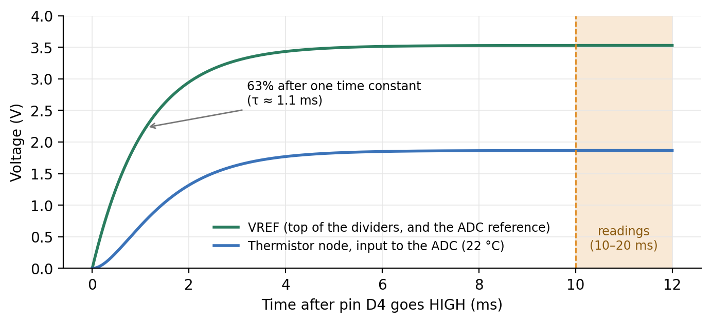
| Time | What happens |
|---|---|
| 0 ms | Pin D4 goes HIGH. R11 limits the inrush into C13 to 3.2 mA. |
| 0–10 ms | VREF and the four thermistor nodes charge and settle (about 9 and 19 time constants). |
| 10–20 ms | The ADC takes 64 readings of each of A0–A3 and averages them. |
| 20 ms | Pin D4 goes LOW; the network discharges. The thermistors rest for the remaining 980 ms. |
| every 1 s | Repeat, through the background, heating and cooling phases. |
Everything in Sections 2 and 3 is a real part you can find on the board. Figure 6 shows the whole sensor as KiCad renders it, turned the way the website draws it: cable end up, needles down, seen from the top face (so TH1 is on the right). Figure 7 zooms in on the head. Every part is marked with a dot and its name, each color is one job, and the text beside each group says in a sentence what it does and which section explains it. Appendix A lists every part with its manufacturer, part number and specifications.
| Color | Job | Where the theory is |
|---|---|---|
| Orange | Power coming in from the battery, and its protection | Section 2.2 (Ohm's law around the heater loop) |
| Gold | Making and distributing the 5 V for the electronics | Section 2.4 (capacitors as buckets) |
| Blue | The processor and its programming holes | Section 3.3 (the ADC lives inside U1) |
| Teal | The SDI-12 line to the data logger | Section 1; tour step 9 on the website |
| Pink | Temperature measurement: the thermistor circuit of Figure 3 | Sections 3.1–3.7 |
| Red | The heater: switching it and measuring the power it delivers | Sections 2.2 and 5.5 (\(q'\) comes from U4's measurement) |
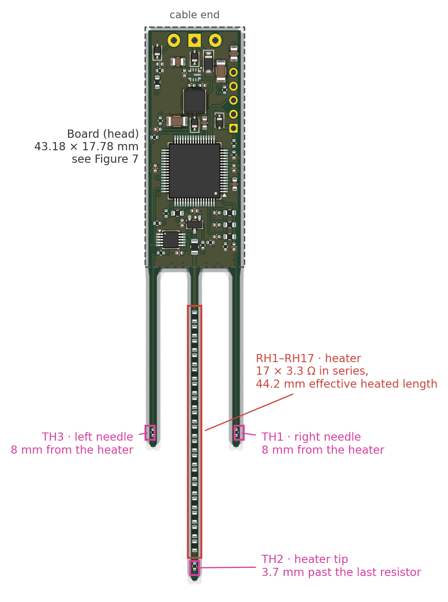
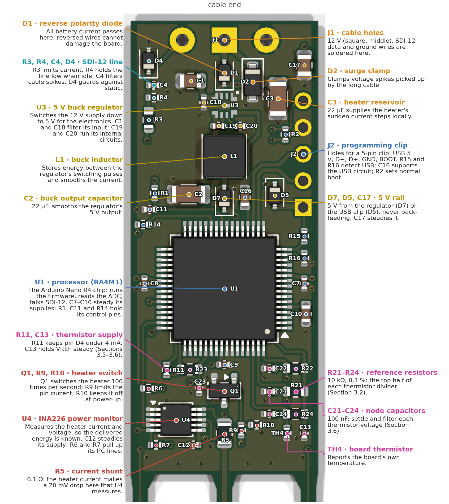
Three properties describe how a material handles heat:
| Property | Symbol · unit | Meaning | Analogy |
|---|---|---|---|
| Thermal conductivity | \(\lambda\) · W m⁻¹ K⁻¹ | How easily heat flows through it | How wide the pipes are |
| Volumetric heat capacity | \(C\) · J m⁻³ K⁻¹ (MJ m⁻³ K⁻¹) | Energy needed to warm 1 m³ by 1 °C | How big each bucket is |
| Thermal diffusivity | \(\alpha = \lambda/C\) · m² s⁻¹ (mm² s⁻¹) | How fast a temperature change spreads | Wide pipes into small buckets: news travels fast |
Soil is a mix of minerals, organic matter, water and air, and the mix sets the properties:
| Material | \(\lambda\) (W m⁻¹ K⁻¹) | \(C\) (MJ m⁻³ K⁻¹) |
|---|---|---|
| Water | 0.6 | 4.18 |
| Air | 0.025 | 0.0012 |
| Quartz | ≈ 8 | ≈ 2.0 |
| Other soil minerals | ≈ 2–3 | ≈ 2.0 |
| Dry soil (typical) | 0.2–0.5 | 1.0–1.4 |
| Moist soil (typical) | 1.0–2.0 | 2.0–3.2 |
The key fact for water content: water has twice the heat capacity of minerals and three thousand times that of air. When a soil gains water, the water replaces air, and the heat capacity climbs linearly with the water content. Measure \(C\), and you can back out the water content (Section 5.6).
Heat flows from warm to cold at a rate proportional to the temperature gradient (Fourier's law), and energy is conserved. Combining the two gives the heat equation:
$$ \frac{\partial T}{\partial t} = \alpha\,\nabla^2 T, \qquad \alpha = \frac{\lambda}{C}. $$In words: a spot warms up if it is colder than the average of its surroundings, and the rate is set by the diffusivity. For a long, straight heater it is natural to use distance from the heater, \(r\), as the coordinate; if nothing changes along the heater's length, the equation becomes
$$ \frac{\partial T}{\partial t} = \alpha\left(\frac{\partial^2 T}{\partial r^2} + \frac{1}{r}\frac{\partial T}{\partial r}\right). $$The extra \(1/r\) term appears because heat spreads over ever-larger rings: a ring twice as far away has twice the circumference to warm.
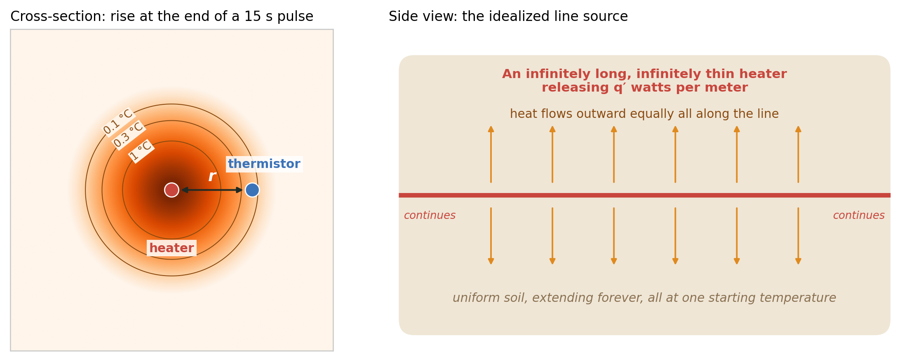
To solve the equation we must say what the world looks like (Figure 8). The classic dual-probe analysis (Campbell et al. 1991, who treated the heat pulse as instantaneous; Kluitenberg et al. 1993 and Bristow et al. 1994, who included its finite duration) assumes:
If the line heats forever, the solution (Carslaw and Jaeger 1959; Blackwell 1954) is
$$ \Delta T(r,t) = \frac{q'}{4\pi\lambda}\,E_1\!\left(\frac{r^2}{4\alpha t}\right), $$where \(E_1\) is the exponential integral, \(E_1(x) = \int_x^\infty \frac{e^{-u}}{u}\,du\). You do not need to compute it by hand: it is built into scientific libraries (for example scipy.special.exp1 in Python or expint in MATLAB), but not into common spreadsheets or data-logger function libraries; Knight and Kluitenberg (2004) give a simple polynomial approximation for those cases. All you need to know is that it is large for small arguments (long times, short distances) and falls quickly to zero for large ones. The group \(r^2/(4\alpha t)\) is a natural "clock": the heat front reaches a distance \(r\) at a time of order \(r^2/(4\alpha)\), which for our 8 mm and a typical soil is about 30 s.
Switching off: superposition. The heat equation is linear, so solutions can be added. Turning the heater off at \(t_0\) is the same as leaving it on and adding a second, negative heater that starts at \(t_0\):
$$ \Delta T(r,t) = \frac{q'}{4\pi\lambda}\left[E_1\!\left(\frac{r^2}{4\alpha t}\right) - E_1\!\left(\frac{r^2}{4\alpha (t - t_0)}\right)\right], \qquad t > t_0. $$Figure 9 shows how the two pieces combine.
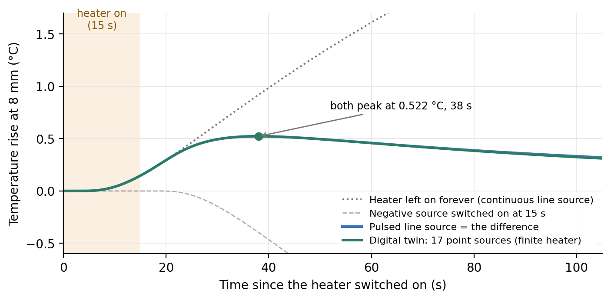
The side-needle curve rises, peaks at a time \(t_m\) with height \(\Delta T_m\), and falls. Setting the time derivative of the pulsed solution to zero gives a formula for the diffusivity from the peak time alone (Bristow et al. 1994):
$$ \alpha = \frac{r^2}{4}\;\frac{\dfrac{1}{t_m - t_0} - \dfrac{1}{t_m}}{\ln\!\left(\dfrac{t_m}{t_m - t_0}\right)}. $$Then the peak height gives the conductivity, and the ratio gives the heat capacity:
$$ \lambda = \frac{q'}{4\pi\,\Delta T_m}\left[E_1\!\left(\frac{r^2}{4\alpha t_m}\right) - E_1\!\left(\frac{r^2}{4\alpha (t_m - t_0)}\right)\right], \qquad C = \frac{\lambda}{\alpha}. $$Read it like this: the pulse of energy spreads into a cylinder of soil of roughly radius \(r\) (cross-section \(\pi r^2\)); the temperature rise is energy divided by (volume × heat capacity), and the factor \(1/e\) (with \(e \approx 2.718\)) is how far down the bell-shaped temperature profile the thermistor sits at that moment: at \(t_m\) the profile has \(\exp(-r^2/4\alpha t_m) = e^{-1}\) at distance \(r\). A soil that stores more heat (wetter) shows a smaller peak. The formula also shows why the spacing matters so much: \(C\) depends on \(r^2\), so a 1% error in spacing becomes a 2% error in heat capacity.
This is the twin's default soil, a silty clay loam core from the Kansas Mesonet soil database (Parker et al. 2022) whose KD2 Pro readings are \(\lambda = 1.283\) W m⁻¹ K⁻¹ and \(C = 2.345\) MJ m⁻³ K⁻¹ (so \(\alpha = 0.547\) mm² s⁻¹).
| Step | Calculation | Result |
|---|---|---|
| Heater power (average) | \(0.85 \times 2.346\) W | 1.994 W |
| Effective heated length | 17 resistors × 2.6 mm (see the note below) | 44.2 mm |
| Power per meter | \(q' = 1.994 / 0.0442\) | 45.11 W m⁻¹ |
| Energy per meter | \(Q' = q' t_0 = 45.11 \times 15\) | 677 J m⁻¹ |
| Predicted peak (ideal line) | pulsed equation, \(r\) = 8 mm | 0.522 °C at 38.0 s |
Now pretend we measured that curve and want the soil back. With \(t_m = 38\) s, \(t_0 = 15\) s and \(r = 0.008\) m:
$$ \alpha = \frac{(0.008)^2}{4}\cdot\frac{\tfrac{1}{23} - \tfrac{1}{38}}{\ln(38/23)} = 1.6\times10^{-5}\cdot\frac{0.01716}{0.5021} = 5.47\times10^{-7}\ \text{m}^2\,\text{s}^{-1}. $$The two \(E_1\) arguments are \(r^2/(4\alpha t_m) = 0.770\) and \(r^2/(4\alpha(t_m - t_0)) = 1.272\), with \(E_1\) values 0.3281 and 0.1415:
$$ \lambda = \frac{45.11}{4\pi \times 0.5221}\,(0.3281 - 0.1415) = 1.283\ \text{W m}^{-1}\text{K}^{-1}, \qquad C = \frac{1.283}{5.47\times10^{-7}} = 2.345\ \text{MJ m}^{-3}\text{K}^{-1}. $$We recover the soil to within rounding, as we should when the data follow the model perfectly. The short-pulse shortcut gives \(C = 677/(2.718 \times \pi \times 0.008^2 \times 0.5221) = 2.37\) MJ m⁻³ K⁻¹, only 1% off, a good sanity check you can do on a calculator.
Heat capacity adds up by volume (de Vries 1963):
$$ C = \rho_b\,c_s + \theta\,C_w \qquad\Rightarrow\qquad \theta = \frac{C - \rho_b\,c_s}{C_w}, $$with bulk density \(\rho_b\) (Mg m⁻³), mineral specific heat \(c_s \approx 0.75\) MJ Mg⁻¹ K⁻¹, water \(C_w = 4.18\) MJ m⁻³ K⁻¹ and volumetric water content \(\theta\) (m³ m⁻³). Air adds essentially nothing. For the Hodgeman core, \(\rho_b = 1.363\):
$$ \theta = \frac{2.345 - 1.363 \times 0.75}{4.18} = \frac{2.345 - 1.022}{4.18} = 0.32\ \text{m}^3\,\text{m}^{-3}. $$The core's measured water content is 0.39. The gap shows that the de Vries relation has its own scatter (organic matter, mineral mix, the KD2 reading itself); in the Kansas dataset's wetter states (saturated, 33 and 70 kPa), measured heat capacities average about 6–9% below this line, with a scatter of about ±11–14%, and drier states scatter more. This core sits 12% below it (2.345 measured against 2.665 predicted). A sensor-specific calibration against measured water contents would remove much of this.
The real heater is not an infinite line. It is made of 17 separate resistors 2.6 mm apart (a 44.2 mm effective length), and it starts about 9 mm below the board. To predict what the real sensor would see, the twin treats each resistor as a point source in uniform soil. For a point releasing power \(P\) from time 0, the rise at distance \(d\) is (Carslaw and Jaeger 1959)
$$ \Delta T(d,t) = \frac{P}{4\pi\lambda\,d}\;\text{erfc}\!\left(\frac{d}{2\sqrt{\alpha t}}\right), $$where erfc is the complementary error function (another standard function). The twin switches each source off at \(t_0\) by superposition, as in Section 5.3, and adds up all 17:
$$ \Delta T(r,z,t) = \sum_{i=1}^{17} \frac{P_i}{4\pi\lambda\,d_i}\left[\text{erfc}\!\left(\frac{d_i}{2\sqrt{\alpha t}}\right) - \text{erfc}\!\left(\frac{d_i}{2\sqrt{\alpha (t-t_0)}}\right)\right], \qquad d_i = \sqrt{r^2 + (z - z_i)^2}, $$with the second term only after \(t_0\), \(P_i = 1.994/17 = 0.117\) W, and \(z_i = 8.8 + 2.6\,(i-1)\) mm the position of resistor \(i\) along the needle. TH1 and TH3 sit at \(z = 29.8\) mm, the middle of the heated section, and \(r = 8\) mm. TH2 sits on the heater needle, 3.68 mm past the last resistor. Figure 10 shows the resulting temperature field.
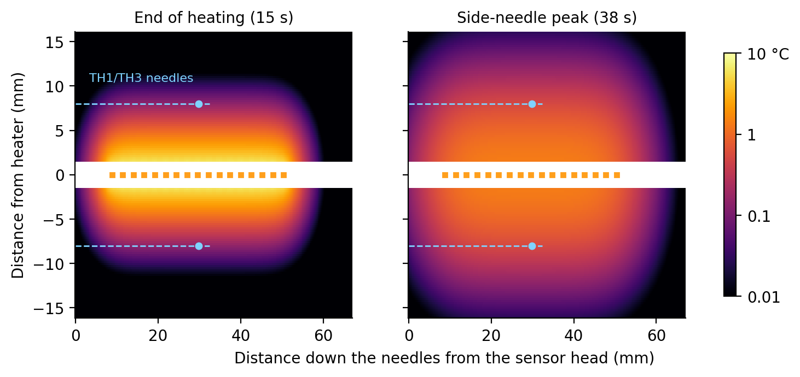
Many soil models divide the soil into a grid and step forward in time (finite differences or finite elements), and then grid spacing and time step control the accuracy. The twin has no grid. Both the line-source and the point-source solutions are exact formulas: the temperature at any point and time is computed directly, independently of every other point. So there is no numerical diffusion and no stability limit. What the twin does choose:
| Item | Value | Why |
|---|---|---|
| Heater discretization | 17 point sources, 2.6 mm apart | One per real resistor, at its real position |
| Stored temperature series | every 0.25 s | Smooth chart lines |
| Simulated readings | every 1 s, 64-reading averages, 14-bit codes | What the firmware would record |
| Website colormap | 114 × 56 pixels over 67 × 32 mm (about 0.6 mm per pixel), refreshed every 0.25 s | For display only; each pixel is computed exactly |
| Special functions | erfc to 1.2 × 10⁻⁷; \(E_1\) by series and continued fraction | Errors far below a millikelvin |
Boundary and initial conditions are those of Section 5.2, applied in three dimensions: uniform soil in every direction (no soil surface, no board or epoxy), uniform starting temperature, \(\Delta T \to 0\) far away, and zero-size needles that store no heat and touch the soil perfectly. The heater power is the PWM average; the 100 Hz flicker is not simulated (8 mm of soil smooths it out almost completely). TH4 on the board is held at the starting temperature because heat flow into the board is not modeled.
The twin runs the measurement in two directions, like a real experiment:
Two analysis choices decide how close the answer comes. Take first a simple analysis that divides the power by the resistor-end-to-end length, 43.2 mm, and fits the whole 105 s record of a 90 s cooling phase. For the Hodgeman soil it reports \(\lambda = 1.331\) W m⁻¹ K⁻¹ (+3.7%) and \(C = 2.406\) MJ m⁻³ K⁻¹ (+2.6%). Three separate effects add up to that, and it is worth keeping them apart because they have different cures:
| Effect | \(\lambda\) | \(C\) | Cure |
|---|---|---|---|
| 1. Heated-length bookkeeping. Dividing the power by 43.2 mm (resistor end to resistor end) instead of the effective 44.2 mm (Section 5.5) makes \(q'\) 2.3% too high. Both properties scale with \(q'\). | +2.3% | +2.3% | Use 17 × 2.6 mm, or calibrate |
| 2. Finite heater (end effect). Heat also flows past the two ends of the heater. At the thermistor, midway along, the curve matches the ideal line through the peak, then falls below it late in the tail (Figure 11, right). Here the fit runs to 105 s. Late in the tail the ideal line depends on \(\lambda\) alone (\(\Delta T \approx Q'/(4\pi\lambda t)\)), so a lower tail pushes the fitted \(\lambda\) up; \(C\), set mainly by the peak height, barely moves, so \(\alpha = \lambda/C\) rises too. | +1.5% | +0.4% | Fit only to just past the peak (Section 7.6) |
| 3. Quantization, sampling and background subtraction. One ADC step is 0.006 °C; the fit's RMS misfit is about 0.003 °C. | ≈ −0.1% | ≈ −0.1% | Small here. Without noise it can reach about ±0.8%, depending on where the baseline falls within one ADC step; real noise averages it out. |
The effects multiply: \(1.023 \times 1.015 \times 0.999 \approx 1.037\) for \(\lambda\) and \(1.023 \times 1.004 \times 0.999 \approx 1.026\) for \(C\), the +3.7% and +2.6% above. The website uses the better choices: the effective length and a fit from heater-on to 1.5 times the measured peak time. It reports \(\lambda = 1.285\) (+0.1%), \(C = 2.344\) (−0.0%) and \(\alpha = 0.548\) mm² s⁻¹ for this soil, from 57 one-second readings (Sections 7.6–7.8).
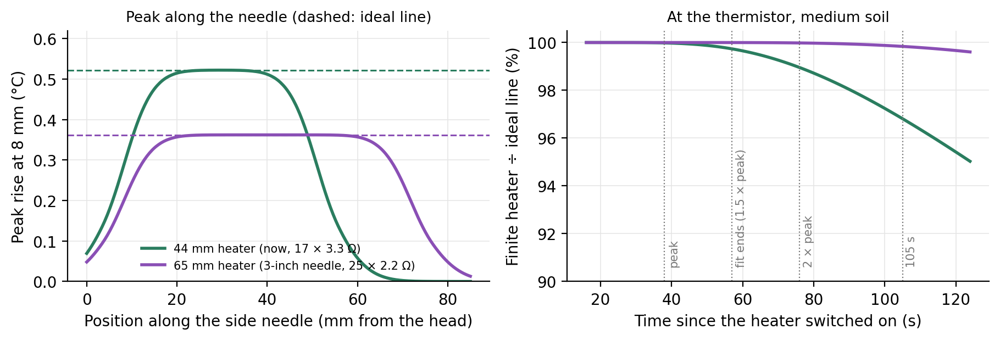
A real sensor adds more differences that the twin deliberately leaves out, because they need measurements to quantify: the needles' own radius and heat capacity, which shift and rescale the peak (earlier and higher, or later and lower, depending on whether the needles store less or more heat per volume than the soil; Knight et al. 2012); epoxy, contact resistance, and air gaps around the needles; the exact spacing after assembly and insertion; heater resistance changing slightly as it warms; and the soil not being uniform. That is why heat-pulse sensors are usually calibrated: measure a material with known properties (water stabilized with agar is common), and adjust the effective spacing until the sensor reads correctly. That absorbs a constant bias in \(C\), including the heated-length bookkeeping above, but not in \(\lambda\): in the line-source analysis \(\lambda\) does not depend on \(r\) at all. Getting \(\lambda\) right needs the correct \(q'\), or a second check against a material of known conductivity (water, about 0.6 W m⁻¹ K⁻¹).
The Kansas dataset stores the raw temperature rise that the KD2 Pro recorded for each reading. The SH-1 probe has two 30 mm needles 6 mm apart and heated this core for 60 s at 18.3 W m⁻¹.
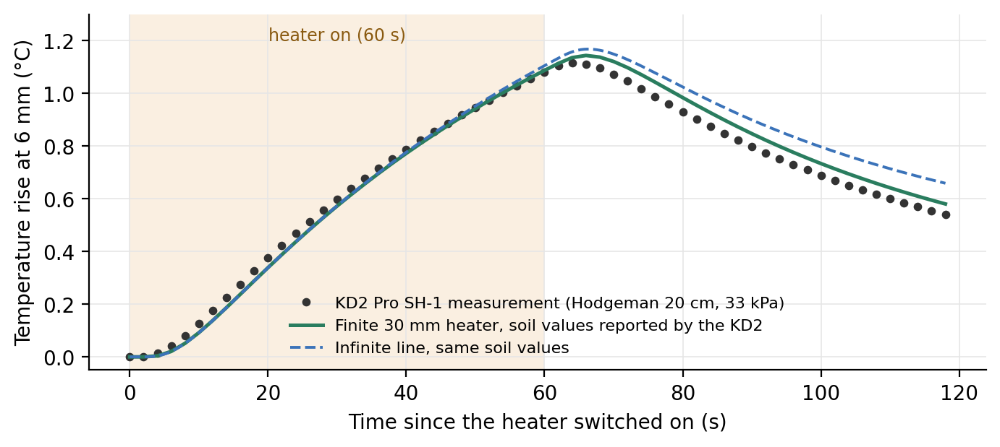
Figure 12 shows the curve. One point first: the KD2 computed its reported \(\lambda\) and \(C\) from this same curve with its own analysis, which we do not know in detail. So any gap between those values and our fit is first a difference between two analyses of identical data. With that in mind, here is what the curve teaches, with numbers checked by simulation:
With the equations in hand we can ask design questions and answer them with numbers. Each question below changes one thing and keeps everything else as it is now.
| Soil | Kansas Mesonet core and state | \(\lambda\) (W m⁻¹ K⁻¹) | \(C\) (MJ m⁻³ K⁻¹) | \(\alpha\) (mm² s⁻¹) |
|---|---|---|---|---|
| Dry | Miami 5 cm, oven-dry | 0.244 | 1.349 | 0.181 |
| Medium | Hodgeman 20 cm, 33 kPa (the twin's default) | 1.283 | 2.345 | 0.547 |
| Wet sandy | Lake City 5 cm, sandy loam, saturated | 2.159 | 1.944 | 1.111 |
The heater power is the same in every case (1.994 W average, 85% duty at 12 V), except the long-needle case, which needs different resistors (Section 7.5).
From the short-pulse solution (Section 5.4), treating the pulse as if it were released all at once at its midpoint:
$$ t_m \approx \frac{r^2}{4\alpha} + \frac{t_0}{2}, \qquad \Delta T_m \approx \frac{Q'}{e\,\pi\,r^2\,C}, \qquad Q' = q'\,t_0. $$These are approximations. They work within a few percent while the pulse is short compared with \(r^2/(4\alpha)\), and fail for long pulses (Section 7.4). The comparisons below use the full pulsed line-source solution of Section 5.3, which is what the rules approximate. Check them on the present design (medium soil, \(r\) = 8 mm, \(t_0\) = 15 s, \(Q'\) = 677 J m⁻¹):
$$ \frac{r^2}{4\alpha} = \frac{(0.008)^2}{4 \times 5.47\times10^{-7}} = 29.2\ \text{s} \;\Rightarrow\; t_m \approx 29.2 + 7.5 = 36.7\ \text{s} \quad(\text{full solution: } 38.0\ \text{s}), $$ $$ \Delta T_m \approx \frac{677}{2.718 \times \pi \times (0.008)^2 \times 2.345\times10^{6}} = \frac{677}{1282} = 0.528\ ^\circ\text{C} \quad(\text{full solution: } 0.522\ ^\circ\text{C}). $$By hand. Only \(r\) changes. \(r^2/(4\alpha)\) becomes 16.5 s at 6 mm and 45.7 s at 10 mm, so \(t_m \approx\) 24.0 s and 53.2 s (full solution: 26.0 s and 54.0 s). At 6 mm the time rule is 8% low, because the 15 s pulse is nearly as long as \(r^2/(4\alpha)\). The peak scales with \(1/r^2\): \(677/(2.718\,\pi \times 0.006^2 \times 2.345\times10^6) = 0.939\) °C at 6 mm and 0.338 °C at 10 mm (full solution: 0.909 and 0.336 °C).
What changes.
The Kansas readings in this chapter were taken with a KD2 Pro SH-1, which heats for 60 s (Section 6.4). Today's dual-probe sensors typically heat for 8–15 s; ours defaults to 15 s, and 60 s remains available only as a setting.
By hand. The power per meter stays 45.11 W m⁻¹, so the energy is \(Q' = 45.11 \times t_0\): 361, 677 and 2706 J m⁻¹. For 8 s: \(t_m \approx 29.2 + 4 = 33.2\) s and \(\Delta T_m \approx 361/1282 = 0.282\) °C (full solution: 33.6 s and 0.281 °C). For 60 s the rules give 59.2 s and 2.11 °C, but the full solution gives 74.3 s and 1.867 °C: the rules of thumb fail. The time rule even puts the peak before the heater switches off at 60 s. A 60 s pulse lasts longer than the 29 s the heat needs to reach the thermistor, so it no longer behaves like a single burst. Use the full equations of Section 5.4.
What changes.
A 3-inch (76 mm) needle has room for a 65 mm heater: 25 resistors at 2.6 mm, heater midpoint about 40 mm below the board (the side thermistors would move there too). The catch is the 12 V supply: 25 × 3.3 Ω = 82.5 Ω would cut the power to about 1.4 W. Keeping about 2 W needs about the same total resistance as now, so 25 × 2.2 Ω = 55 Ω. By Ohm's law (Section 2.2) that gives 2.03 W average, spread over 65 mm: \(q' = 31.27\) W m⁻¹, 31% less than now.
This question matters more than the needle length. The peak's height and timing carry most of the information: the height mainly sets \(C\), the timing sets \(\alpha\). The tail is where the ideal line and the real sensor agree least. For the finite heater, the curve matches the ideal line through the peak and departs from it only late in the tail (Figure 11, right). The effects the model leaves out, such as the needles' own heat capacity, imperfect contact, heat left from a previous pulse and the soil's natural temperature drift, also show up mostly in the tail. So the further past the peak we fit, the more the fit is pulled by the part of the curve the ideal line gets wrong. This agrees with advice from G. J. Kluitenberg (personal communication, May 2026): fitting the tail, the part of least agreement, is a common mistake, and the fit should end just past the peak.
Without noise. Errors of the fitted \(\lambda\) / \(C\) for today's heater (8 mm, 15 s), by how far the fit runs:
| Soil | Peak time | to 1.5 \(t_m\) | to 2 \(t_m\) | to 3 \(t_m\) | fixed 105 s | fixed 300 s |
|---|---|---|---|---|---|---|
| Dry | 96.3 s | +0.1% / ±0.0% | +0.3% / +0.1% | +1.2% / +0.4% | ±0.0% / ±0.0% | +1.4% / +0.4% |
| Medium | 37.9 s | +0.2% / +0.1% | +0.6% / +0.2% | +1.8% / +0.4% | +1.5% / +0.4% | +7.9% / +1.0% |
| Wet sandy | 24.2 s | +0.5% / +0.1% | +1.2% / +0.3% | +3.2% / +0.5% | +5.7% / +0.6% | +13.9% / +0.4% |
With noise. The one argument for fitting further is that more points average out noise. To test it, we added independent random noise of 5 mK to each one-second reading (about one ADC step; the background is the mean of ten noisy readings), repeated each fit 200 times, and report the mean error ± the standard deviation of \(\lambda\):
| Soil (peak time) | to 1.1 \(t_m\) | to 1.25 \(t_m\) | to 1.5 \(t_m\) | to 2 \(t_m\) | to 3 \(t_m\) |
|---|---|---|---|---|---|
| Dry (96 s) | 0.0 ± 0.2% | 0.0 ± 0.2% | 0.1 ± 0.2% | 0.4 ± 0.2% | 0.4 ± 0.2% |
| Medium (38 s) | 0.1 ± 0.7% | 0.1 ± 0.5% | 0.2 ± 0.4% | 0.5 ± 0.4% | 1.8 ± 0.4% |
| Wet sandy (24 s) | 0.1 ± 1.0% | 0.3 ± 0.7% | 0.5 ± 0.5% | 1.2 ± 0.4% | 3.1 ± 0.4% |
The website and the planned firmware therefore fit from heater-on to 1.5 times the measured peak time. Readings recorded after that are kept, for plotting and quality checks, but not fitted. These tests assume independent noise and an ideal soil; the best window should be confirmed with bench data.
Table A. Signal. Peak rise at the thermistor and the maximum rise of the soil touching the heater needle (at its 1.385 mm outer radius, beside the middle resistor; point-source model, needle wall ignored).
| Case | Soil | \(q'\) (W m⁻¹) | \(Q'\) (J m⁻¹) | Peak rise (°C) | ADC steps | Peak time (s) | Soil next to heater, max rise (°C) |
|---|---|---|---|---|---|---|---|
| Now: 44 mm heater, 8 mm, 15 s | Dry | 45.1 | 677 | 0.916 | 145 | 96.3 | 21.3 |
| Medium | 45.1 | 677 | 0.522 | 83 | 37.9 | 6.8 | |
| Wet sandy | 45.1 | 677 | 0.611 | 97 | 24.2 | 5.1 | |
| Spacing 6 mm | Dry | 45.1 | 677 | 1.625 | 257 | 58.0 | 21.3 |
| Medium | 45.1 | 677 | 0.909 | 144 | 26.1 | 6.8 | |
| Wet sandy | 45.1 | 677 | 1.019 | 161 | 19.2 | 5.1 | |
| Spacing 10 mm | Dry | 45.1 | 677 | 0.586 | 93 | 144.8 | 21.3 |
| Medium | 45.1 | 677 | 0.336 | 53 | 53.6 | 6.8 | |
| Wet sandy | 45.1 | 677 | 0.399 | 63 | 31.4 | 5.1 | |
| Heat 8 s | Dry | 45.1 | 361 | 0.489 | 77 | 92.5 | 14.4 |
| Medium | 45.1 | 361 | 0.281 | 44 | 33.6 | 5.2 | |
| Wet sandy | 45.1 | 361 | 0.335 | 53 | 19.1 | 4.1 | |
| Heat 60 s | Dry | 45.1 | 2706 | 3.604 | 571 | 124.8 | 39.5 |
| Medium | 45.1 | 2706 | 1.861 | 295 | 74.1 | 10.5 | |
| Wet sandy | 45.1 | 2706 | 1.840 | 291 | 65.0 | 7.4 | |
| 3-inch needle, 65 mm heater | Dry | 31.3 | 469 | 0.635 | 101 | 96.4 | 14.8 |
| Medium | 31.3 | 469 | 0.362 | 57 | 38.0 | 4.7 | |
| Wet sandy | 31.3 | 469 | 0.424 | 67 | 24.3 | 3.6 |
Table B. What the analysis reports (fitted value, with the error relative to the true soil value in parentheses; fit from heater-on to 1.5 times the peak time).
| Case | Soil | \(\lambda\) fitted (W m⁻¹ K⁻¹) | \(C\) fitted (MJ m⁻³ K⁻¹) | \(\alpha\) fitted (mm² s⁻¹) | Record fitted (s) |
|---|---|---|---|---|---|
| Now: 44 mm heater, 8 mm, 15 s | Dry | 0.244 (+0.1%) | 1.350 (±0.0%) | 0.181 (+0.1%) | 144 |
| Medium | 1.285 (+0.2%) | 2.346 (+0.1%) | 0.548 (+0.1%) | 56 | |
| Wet sandy | 2.169 (+0.5%) | 1.947 (+0.1%) | 1.114 (+0.3%) | 36 | |
| Spacing 6 mm | Dry | 0.244 (±0.0%) | 1.349 (±0.0%) | 0.181 (±0.0%) | 86 |
| Medium | 1.283 (±0.0%) | 2.345 (±0.0%) | 0.547 (±0.0%) | 39 | |
| Wet sandy | 2.161 (+0.1%) | 1.944 (±0.0%) | 1.112 (+0.1%) | 28 | |
| Spacing 10 mm | Dry | 0.246 (+0.8%) | 1.354 (+0.4%) | 0.182 (+0.4%) | 217 |
| Medium | 1.296 (+1.0%) | 2.355 (+0.4%) | 0.550 (+0.6%) | 80 | |
| Wet sandy | 2.193 (+1.6%) | 1.956 (+0.6%) | 1.121 (+1.0%) | 47 | |
| Heat 8 s | Dry | 0.244 (+0.1%) | 1.349 (±0.0%) | 0.181 (±0.0%) | 138 |
| Medium | 1.284 (+0.1%) | 2.346 (±0.0%) | 0.547 (+0.1%) | 50 | |
| Wet sandy | 2.163 (+0.2%) | 1.945 (+0.1%) | 1.112 (+0.1%) | 28 | |
| Heat 60 s | Dry | 0.245 (+0.2%) | 1.350 (+0.1%) | 0.181 (+0.1%) | 187 |
| Medium | 1.304 (+1.6%) | 2.352 (+0.3%) | 0.554 (+1.3%) | 111 | |
| Wet sandy | 2.282 (+5.7%) | 1.943 (−0.1%) | 1.174 (+5.7%) | 97 | |
| 3-inch needle, 65 mm heater | Dry | 0.244 (±0.0%) | 1.349 (±0.0%) | 0.181 (±0.0%) | 144 |
| Medium | 1.283 (±0.0%) | 2.345 (±0.0%) | 0.547 (±0.0%) | 56 | |
| Wet sandy | 2.159 (±0.0%) | 1.944 (±0.0%) | 1.111 (±0.0%) | 36 |
Every setting below can be changed on the website and, in the planned firmware, on the sensor itself. The defaults are chosen to work reasonably in most soils with the present needles (8 mm spacing, 44 mm heater); change them when you know in advance what conditions you will measure.
| Setting | Default | Why |
|---|---|---|
| Background | 10 s | Ten one-second readings to average for the starting temperature. |
| Heating | 15 s at 85% duty (about 2.0 W, 677 J m⁻¹) | A peak of 0.41–1.05 °C (5th to 95th percentile of the 1,448 Kansas soil states), or about 65–165 ADC steps, while the soil touching the needle warms by 5–18 °C. |
| Cooling | 150 s (165 s of record after heater-on) | The median peak comes 39 s after heater-on and the latest, in an oven-dry core, at 98 s. The record covers 1.5 times the peak time in every state, with room to spare for locating the peak. |
| Analysis | \(q'\) over 44.2 mm; fit from heater-on to 1.5 times the measured peak time | Finite-length model error 0.3% or less for \(\lambda\) and 0.1% or less for \(C\) (5th to 95th percentile of the Kansas states). The website warns if the record ends before the peak. |
When to change them (numbers from the same ideal model; confirm on the bench):
| Interval | Dry | Medium | Wet sandy |
|---|---|---|---|
| 5 min | +19% / +17% | +4.0% / +3.6% | +1.8% / +1.4% |
| 15 min | +3.3% / +2.7% | +0.6% / +0.4% | +0.6% / +0.2% |
| 30 min | +0.9% / +0.7% | +0.3% / +0.1% | +0.5% / +0.2% |
| 60 min | +0.3% / +0.2% | +0.2% / +0.1% | +0.5% / +0.1% |
| no previous pulse | +0.1% / ±0.0% | +0.2% / +0.1% | +0.5% / +0.1% |
For the Hodgeman soil (true values \(\alpha = 0.547\) mm² s⁻¹, \(\lambda = 1.283\), \(C = 2.345\)), as the website computes it: effective heated length, 14-bit readings once per second, fit to 1.5 times the peak time.
| # | Quantity | How we get it | Example |
|---|---|---|---|
| 1 | Heater current | Ohm's law around the loop | 0.2045 A |
| 2 | Heater power, average | \(I^2R\) × duty | 1.994 W |
| 3 | Power per meter \(q'\) | power ÷ 44.2 mm (17 × 2.6 mm) | 45.11 W m⁻¹ |
| 4 | Thermistor code | divider + 14-bit ADC, VREF cancels | 8663 at 22 °C |
| 5 | Thermistor resistance | \(R_\text{ref}\,\text{code}/(16384-\text{code})\) | 11.22 kΩ |
| 6 | Temperature | beta equation | 22.00 °C |
| 7 | Rise at the side needle | temperature − background average | peak ≈ 0.52 °C at 38 s |
| 8 | \(\alpha\), \(\lambda\), \(C\) | fit the pulsed line source up to 1.5 times the peak time | 0.548 mm² s⁻¹, 1.285, 2.344 |
| 9 | Water content | de Vries: \((C - \rho_b c_s)/C_w\) | ≈ 0.32 m³ m⁻³ |
| ADC | Analog-to-digital converter: turns a voltage into a whole number (code). |
| AREF / VREF | The ADC's reference voltage (its ruler). Here both are the same node, which makes the measurement ratiometric. |
| Capacitor | A part that stores charge; smooths voltages and, with a resistor, sets a time constant. |
| Duty cycle | Fraction of time a switch is on during PWM. |
| GND | Ground, the 0 V reference point. |
| MOSFET | An electronic switch (Q1) that a processor pin can open and close. |
| NTC thermistor | Resistor whose resistance falls as temperature rises. |
| PWM | Pulse-width modulation: fast on/off switching to set an average power. |
| Ratiometric | A measurement taken as a ratio, so a common supply voltage cancels. |
| Self-heating | A sensor warmed by the very current used to read it. |
| Superposition | Adding solutions of a linear equation; used to switch the heater off. |
| Time constant \(\tau\) | \(R \times C\): time to reach 63% of a step change. |
| \(q'\) | Heater power per meter of heated length (W m⁻¹). |
| \(\lambda,\ C,\ \alpha\) | Thermal conductivity, volumetric heat capacity, thermal diffusivity (\(\alpha = \lambda/C\)). |
Numbers in this chapter come from the HP-SDI12-NANO design files and the digital twin (docs/sensor-model.js, docs/engine.js) as of September 29, 2026. Self-heating depends on how the thermistor is potted and is an estimate, not a measurement.
68 fitted parts in 27 lines, all on the top face (release BOM flat-nano/fab/HP-SDI12-NANO_BOM.csv, which also gives LCSC numbers). † No substitutes: sets accuracy or heater rating. J1 (cable) and J2 (programming clip) are bare plated holes, not parts.
| Refs (qty) | Function | Manufacturer | Part number | Specifications |
|---|---|---|---|---|
| C1 | Buck input capacitor | Samsung Electro-Mechanics | CL21A475KBQNNNE | MLCC 4.7 µF 50 V X5R, 0805 |
| C2, C3 (2) | Buck output (C2); heater bulk reservoir (C3) | Samsung Electro-Mechanics | CL31A226KAHNNNE | MLCC 22 µF 25 V X5R, 1206 |
| C4 | SDI-12 line filter | Yageo | CC0402KRX7R9BB332 | MLCC 3.3 nF 50 V X7R, 0402 |
| C7–C9, C11, C12, C19, C21–C24 (10) | Bypass, reset, bootstrap, thermistor nodes | Samsung Electro-Mechanics | CL05B104KO5NNNC | MLCC 100 nF 16 V X7R, 0402 |
| C10, C16 (2) | Processor core regulator (C10); USB regulator (C16) | Samsung Electro-Mechanics | CL10A475KO8NNNC | MLCC 4.7 µF 16 V X5R, 0603 |
| C13, C20 (2) | VREF reservoir (C13); buck internal supply (C20) | Samsung Electro-Mechanics | CL05A105KA5NQNC | MLCC 1 µF 25 V X5R, 0402 |
| C17 | Logic-rail capacitor | Samsung Electro-Mechanics | CL21A106KAYNNNE | MLCC 10 µF 25 V X5R, 0805 |
| C18 | Buck input bypass | Samsung Electro-Mechanics | CL05B104KB54PNC | MLCC 100 nF 50 V X7R, 0402 |
| D1, D5, D7 (3) | Reverse polarity (D1); isolation (D5, D7) | JSCJ (Jiangsu Changjing) | B5819WS | Schottky 1 A 40 V, SOD-323 |
| D2 | Input transient suppressor | MDD (Microdiode Semiconductor) | SMF16CA | TVS 16 V standoff, bidirectional, SOD-123FL |
| D4 | Data-line transient suppressor | Nexperia | PESD5V0S1BA,115 | ESD diode, bidirectional 5 V, SOD-323 |
| L1 | Buck inductor | Sunlord | SWPA4020S220MT | Inductor 22 µH ±20 %, 0.62 A sat., 4 × 4 mm |
| Q1 | Heater switch | Alpha & Omega Semiconductor | AO3400A | N-MOSFET 30 V, logic-level gate, SOT-23 |
| R1, R2, R16 (3) | Reset, boot-mode pull-ups; USB detect (R16) | UNI-ROYAL | 0402WGF1002TCE | 10 kΩ 1 %, 0402 |
| R3 | SDI-12 series resistor | UNI-ROYAL | 0603WAF1501T5E | 1.5 kΩ 1 %, 0603 |
| R4 | SDI-12 idle resistor | UNI-ROYAL | 0402WGF2203TCE | 220 kΩ 1 %, 0402 |
| R5 | Heater current shunt | Vishay | WSL0805R1000FEA | 0.1 Ω 1 % current sense, 0805 † |
| R6, R7 (2) | I²C pull-ups (SDA, SCL) | UNI-ROYAL | 0402WGF4701TCE | 4.7 kΩ 1 %, 0402 |
| R9, R11 (2) | Heater gate resistor (R9); thermistor excitation (R11) | UNI-ROYAL | 0402WGF1501TCE | 1.5 kΩ 1 %, 0402 |
| R10 | Heater gate pull-down | UNI-ROYAL | 0402WGF1003TCE | 100 kΩ 1 %, 0402 |
| R14, R15 (2) | NMI pull-up (R14); USB detect (R15) | UNI-ROYAL | 0402WGF5101TCE | 5.1 kΩ 1 %, 0402 |
| R21–R24 (4) | Reference resistors of the thermistor dividers | SIE | CRF0603Q103BN | 10 kΩ 0.1 %, 25 ppm/°C, 0603 † |
| RH1–RH17 (17) | Heater, in series on the center needle | Vishay | CRCW06033R30FKEAHP | 3.3 Ω 1 %, 0.33 W at 70 °C, high-power 0603 † |
| TH1–TH4 (4) | TH1 right needle, TH2 heater tip, TH3 left needle, TH4 board | Murata | NCP15XH103F03RC | NTC 10 kΩ 1 %, β = 3380 K, 0402 † |
| U1 | Processor | Renesas | R7FA4M1AB3CFM#AA0 | Arm Cortex-M4, 48 MHz, 256 KB flash, 14-bit ADC, LQFP-64 |
| U3 | 5 V buck regulator | Texas Instruments | LMR36503R5RPER | Sync. buck, 5 V out, 3–65 V in, 0.3 A, VQFN-HR 2 × 2 mm |
| U4 | Power monitor | Texas Instruments | INA226AIDGSR | Power monitor, 16-bit, I²C, 0–36 V bus, VSSOP-10 |